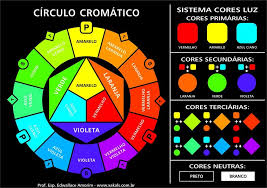
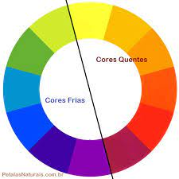
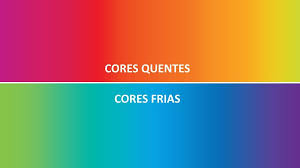
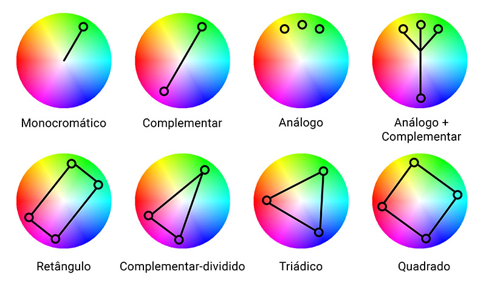

Harmonia das Cores.
1-Circulo Cromático:

Cores Primárias:
Cores Secundárias:
Cores Terciárias: "Cores Pasteis"
- amarelo-alarenjado
- amarelo-esverdeado
- vermelho-alaranjado
- vermelho-violeta
- azul-esverdeado
- azul-violeta
2-Cores quentes e Cores frias. "Analogas"


3-Como escolheras cores para um site:
Vá para o site: Adobe Color e crie sua paleta de cores.
Vá para o site: Paletton e crie sua paleta de cores.

Dica: utilize de 3 a 5 cores na sua paleta de cores em seu site.